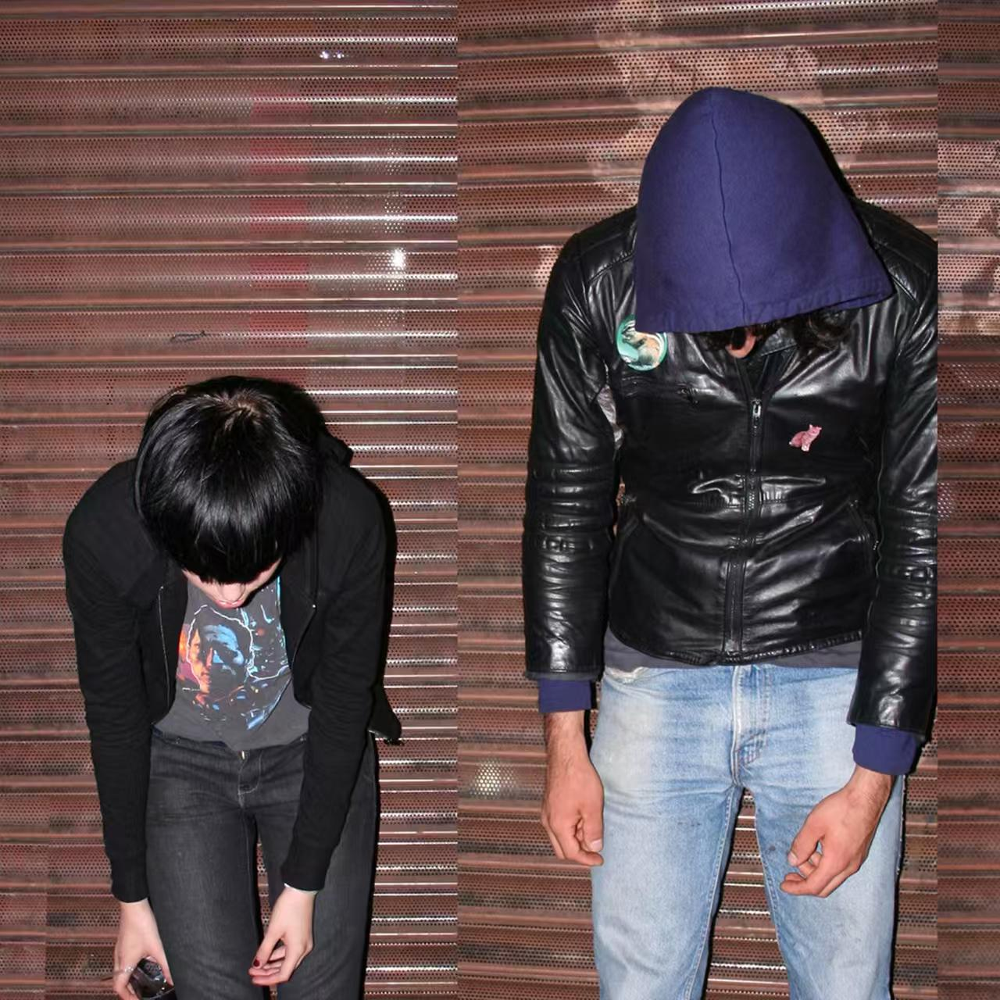
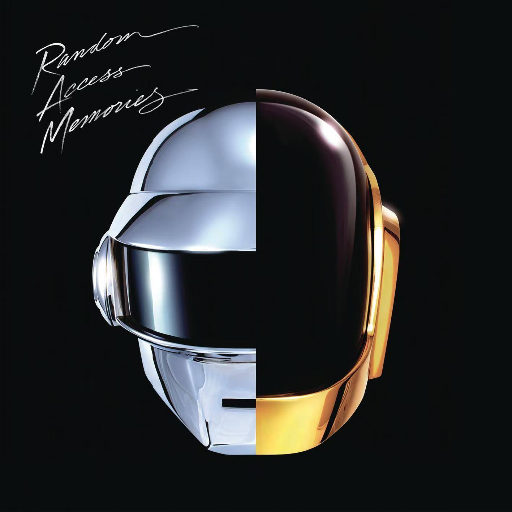

Crystal Castles
卷帘门前两张垂首隐匿的人像，像一场隔绝外界的自我封闭，Crystal Castles 这张 2008 年同名处女专，一上来就用暗黑粗糙的电子声响，把压抑、躁动又破碎的氛围感死死攥住。该组合由 Alice Glass 与 Ethan Kath 二人组建，整张专辑在简陋地下工作室完成录制，融合复古游戏芯片音色与朋克失真，是 00 年代另类电子浪潮里极具代表性的处女作，彻底打破主流电子乐的柔和范式。旋律缠绕着尖锐复古 8bit 音阶，节奏急促冲撞；编曲堆叠失真噪音、复古游戏电子音效，层次狂乱无序；Alice 的人声经过重度失真处理，时而低语嘶吼，冰冷破碎；歌词聚焦孤独、叛逆、都市青年的精神荒芜。它不做悦耳的流行电子，用刺耳混乱的声响复刻青年的迷茫割裂，区别商业化舞曲，把亚文化的阴郁躁动直白剖开，精准戳中偏爱小众暗黑电子乐听众的情绪。适合深夜独处、想逃离平淡情绪时循环，如果你早已听腻温和顺滑的流水线电子乐，渴望粗粝破碎、充满原始冲击力的听觉体验，这张专辑会是藏在地下电子浪潮里，专属于叛逆情绪的绝佳出口。

Random Access Memories
对半分割的金银金属头盔在纯黑底色上泛着冷冽光泽，Daft Punk 的《Random Access Memories》单看封面就透出复古未来交织的浪漫质感，音乐人蠢朋克，曲风融合法式浩室、迪斯科、复古放克与软摇滚。这张 2013 年发行的专辑是二人隐退前的巅峰之作，团队远赴老牌录音室，大量邀请老牌放克、迪斯科音乐人合作，抛弃电子乐泛滥的数字合成器，改用真实复古器乐录制，回溯 70、80 年代复古舞曲黄金时代，重新定义现代法式电子乐的表达边界。专辑旋律流畅丝滑，带着复古舞曲标志性的舒展律动，高低起伏温柔治愈；编曲铺满温润贝斯、爵士吉他、复古键盘与人声和声，虚实器乐层次丰富饱满，褪去冰冷机械感；人声兼顾慵懒念白、细腻抒情与复古舞曲式合唱，温暖柔和，完美中和电子音色的疏离；歌词围绕时光、回忆、热爱与旧时代浪漫展开，满是怀旧温柔的氛围感。它跳出电子乐只靠合成器堆砌的固有思路，用复古器乐与电子音效碰撞出跨越年代的浪漫，是复古舞曲与现代电子融合难以超越的经典。适合午后独处或是深夜兜风时完整循环，如果你听腻了冰冷嘈杂的流水线电子舞曲，想要一张温柔复古、满是怀旧氛围感的法式电子专辑，这张作品会带你坠入一场温柔复古的金色旧梦。